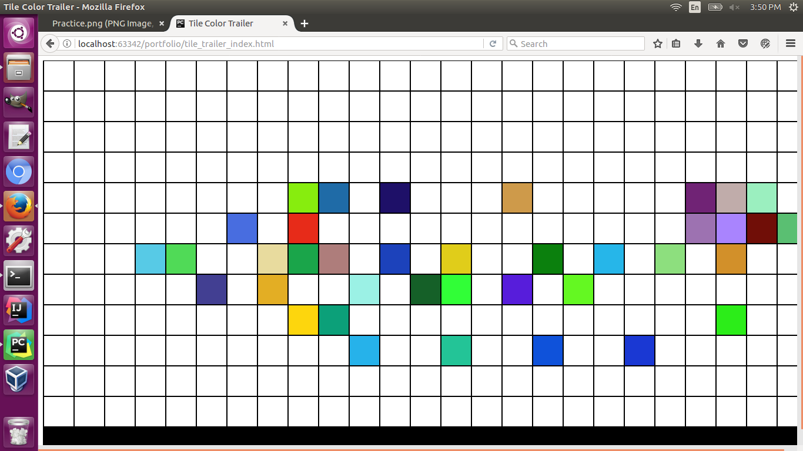
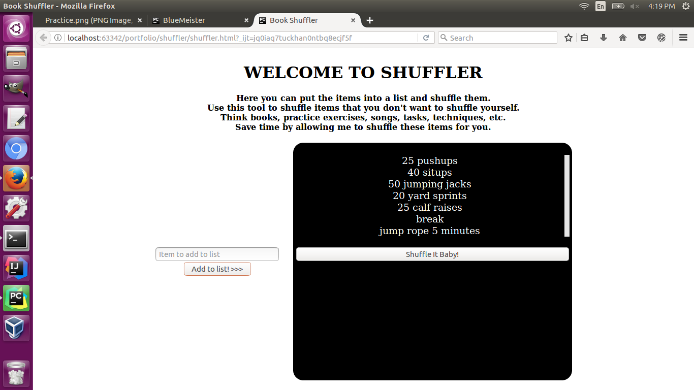
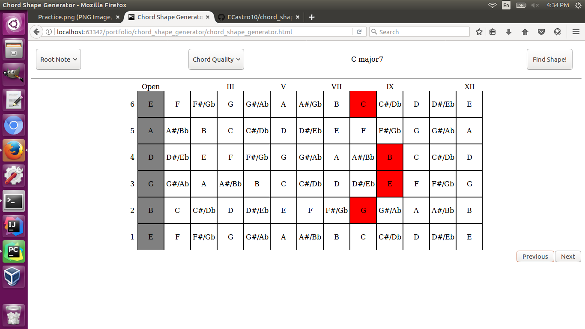
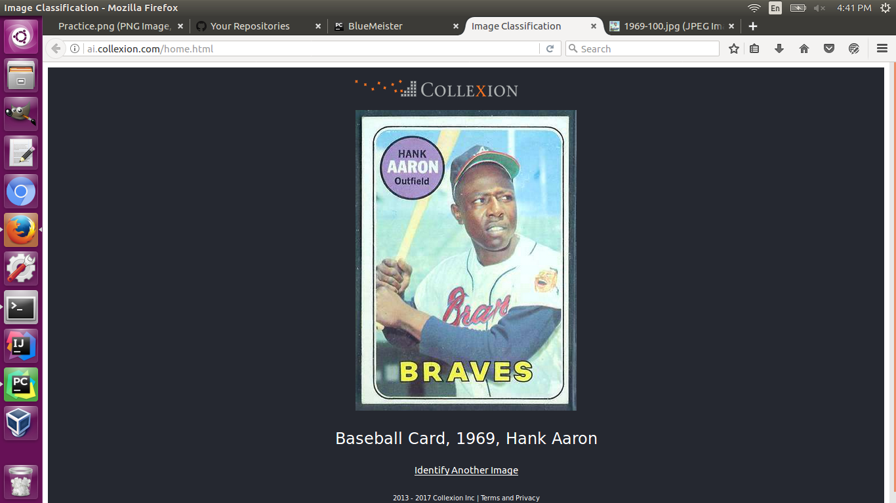
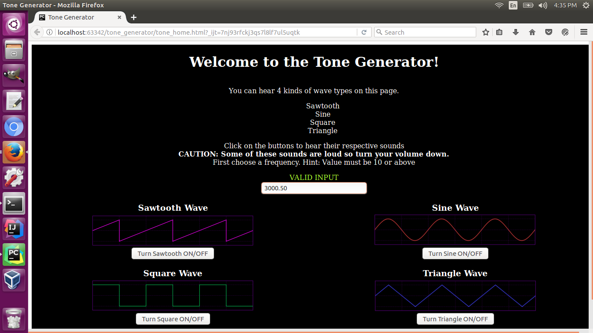

Welcome!
My name is Emanuel, I am currently a server at a retirement community looking to transition
into the tech industry.
Who is the doggo? She is Blue, my faithful husky/blue heeler companion.
Besides programming, I enjoy learning/playing the guitar, listening
to music, watching Star Trek, playing with the pets, and just letting my curiosity lead me to
new concepts or ideas.
Below is some of my work, in bold are the tools used, and underneath is the github link.
Tile Color Trailer
Populates the screen with tiles, when you hover over a tile, it chooses a true random color
and it changes back to white after a half second.
HTML, CSS, Flexbox, Javascript, jQuery, Django
Tile Color Trailer repo
Shuffler
Add items into a list, then shuffle them however many times you want.
HTML, CSS, Flexbox Javascript, jQuery, Django
Shuffler's repo
Chord Shape Generator
Choose a root note, a chord quality, then click on find shape! You can then see other shapes with the next or previous buttons.
HTML, CSS, Flexbox, Javascript, jQuery
Chord Shape Generator repo
Collexion's Visual Recognition Demo
Plug in an image to find out what it is with IBM Watson Visual Recognition.
Was intended for the following:
Baseball cards (1968, 1969, specifically Hank Aaron, and Mickey Mantle),
Typewriters (Royal and Underwood), Vinyl Album Covers (Elvis Presley and the Beatles)
HTML, CSS, Flexbox, Javascript, jQuery, Python, IBM Watson Visual Recognition, AJAX calls
Collexion's Demo repo
Tone Generator
Listen to 4 different kinds of sound wave shapes in your desired number of Hertz.
HTML, CSS, Flexbox, Javascript, jQuery, Mozilla Web Audio API
Tone Generator repo
Particulate Matter Data Logger (Prototype / Current Project)
Created at PNCA's "Sensing the environment" hackathon. This is only the beginning.
Our team created this prototype and the housing.
A prototype for a Particulate Matter Sensor that logs readings every second
Teensyduino 3.2, Teensyduino Audio Shield, RTC module, AA battery deck,
PMS Plantower 5003, C++, Electrical Engineering
Free Geek Scheduler (current project)

Currently working on Free Geek's scheduler with our Free Geek group
from the Code For Good conference. I connected the app to REST API,
created serializers, viewsets, routers, profile page, login, logout,
registration pages, and connected to the old home page to find functionality.
Django, Postgres, Python, REST API, HTML, CSS(Flexbox), Javascript(jQuery)
My Fork Repo
Technical Skills:
Python (Functional and Object-Oriented Programming (OOP))
HTML
CSS
Regex
Javascript
jQuery
AJAX calls
Django Framework
Command Lines (Powershell, Bash, Cygwin)
Version Control
Windows and Linux (Ubuntu) Environments
Some Java Experience
Socketing into Amazon AWS instances and using them
API's - Google Maps, Trimet, REST, Mozilla Web Audio,
Amazon Rekognition, IBM Watson Visual Recognition
Some C++
Microcontrollers - Teensyduino, Arduino Genuino,
and Raspberry Pi
For more projects, checkout my Github
Any questions, comments, or concerns? My email is on my Github repo, just shoot me an email.